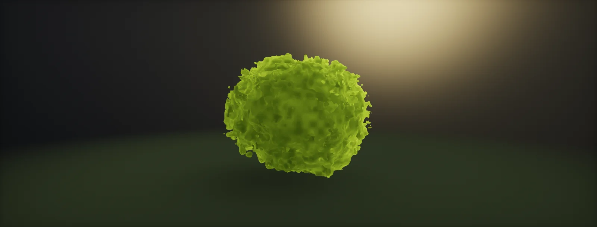

Foliage Shading: Normals and Translucency
Why card normals fail and how to fix them: grass normals toward up or the terrain, spherical and proxy normals for canopies, flip and mirror for back faces, thin translucency, occlusion and per-instance variation, and specular without sparkle, built in Unity HDRP and Unreal.

Why card normals fail
A leaf card's normal points wherever the card happens to face. Lit with those normals, two neighbouring cards can be bright and dark, the crown reads as a pile of paper, and every card's flat shape is visible. A real crown, seen from a few metres, shades like a soft volume: bright on the sun side, dark inside and on the far side. The fix is to replace or blend the card normals with the normals of a simple shape around the crown:
Most foliage pipelines do this in the tree tool, so the engine gets edited normals in the mesh; the shader then only needs normal maps and the usual lighting. Blending is a trade: full canopy normals look soft and volumetric but lose the detail of individual leaves; card normals keep detail but sparkle. Values around 0.6–0.9 are common, with the leaf normal map adding the detail back.
Grass: normals toward up or the terrain
Grass blades are mostly vertical, so their own normals face sideways and light them differently from the ground they grow on: a seam between grass and terrain, worst on slopes and at low sun. Grass meshes therefore usually have their normals set straight up, or blended toward the terrain normal under each blade:
Up-facing normals are baked in the mesh. The terrain normal is better on slopes and is read at runtime: Unity's terrain Grass detail mode uses up-facing normals; custom grass samples the terrain normal map at the blade's root position in the vertex shader. Blend back toward the blade's own normal near the tips if close-up grass needs some side lighting.
Canopies: spherical and proxy normals
For trees and bushes, the replacement normal comes from a proxy: a sphere or ellipsoid around the crown, or one per branch cluster, or a smooth shrink-wrapped hull. The normal at a vertex is the proxy's normal at the closest point (or the direction from the proxy centre). Proxy shape matters for tall crowns:
In Houdini this is an attribute transfer from a smoothed, convex hull of the crown (VDB from the leaves, close, smooth, convert back, transfer N by proximity), blended with the original normals. SpeedTree has its own controls for leaf lighting normals, and 3ds Max and Blender users often use a modifier that copies normals from a proxy mesh. Do it per cluster for large trees, or the whole tree shades like one ball.
Two-sided leaves: flip or mirror
Leaf cards are drawn double-sided, so the back faces need normals too. Engines offer three modes: flip (the back uses −n, the normal of the same thin surface seen from behind), mirror (only the component out of the surface changes sign, so normal-map slopes keep their direction in tangent space) and none (the back uses the front normal):
Flip is the physically consistent choice for a thin sheet and the usual default for foliage. Mirror changes how the normal map's detail lights on the back; use it when the back side looks wrong under flip, which depends on how the textures were authored. None leaves backs dark when the light is on their side and is only right for single-sided geometry. HDRP calls these the Double-Sided Normal Mode; Unreal flips the normal on back faces of two-sided materials, and the Two Sided Foliage shading model adds transmission.
Thin translucency
Leaves are thin, and a good part of the light that reaches their back comes through. A leaf between you and the sun glows yellow-green. The physics is the same as transmission through skin, with a much thinner layer:
Games approximate it with a back-lighting term. Crysis blends a wrapped back diffuse with a view-dependent term that peaks when you look towards the light, scaled by a thickness or transmission map painted per leaf:
Engines expose it directly: HDRP's Translucent material type with a Thickness map and a diffusion profile (HDRP ships a Foliage profile), Unreal's Two Sided Foliage shading model with a Subsurface Color. Keep the transmission colour more saturated and yellower than the leaf albedo, and darker for thick leaves and needles.
Occlusion and colour variation
Two cheap terms do a lot for a forest. Occlusion: the inside of a crown receives little sky light. Bake it per vertex as a function of depth inside the crown (or with a ray-traced AO bake in the tree tool) into the vertex colour alpha, and use it for ambient light only. Variation: identical trees side by side read as copies. Shift hue and brightness per instance from a hash of the instance position, and add a dry/healthy mask driven by height or a world-space noise:
Specular, roughness and sparkle
Leaves have a waxy cuticle: their reflection is visible and surprisingly bright at grazing angles, roughness around 0.3–0.6 depending on the species, with an F0 near 0.03–0.04. Grass is rougher. Two problems are specific to foliage:
- Sparkle: a detailed leaf normal map on small, moving cards produces pixel-sized highlights that flicker. Fade the normal map strength with distance and raise roughness in the distance (or use the engine's specular anti-aliasing, which HDRP has per material).
- Specular occlusion: the inside of a crown should not reflect the bright sky; multiply the specular by the vertex AO (specular occlusion).
Build it in Unity HDRP
Normals are best edited in the tree tool, so the route starts in Houdini. The HDRP graph then sets up translucency, double-sided normals and a distance fade against sparkle, with runtime normal edits available for grass and quick tests. Written for Unity 6 with HDRP 17; Unity 2022 LTS works the same apart from a few renamed menu entries.
- In Houdini, run
CanopyNormalson the leaf cards with the crown's centre and radii (or per cluster). Start with blend 0.8. Export with normals; the tree import script keeps them (Normals: Import). - Create the graph: in the Project window, Create > Shader Graph > HDRP > Lit Shader Graph. Open it and check the Graph Inspector > Graph Settings: Material Type Translucent, Double-Sided on with Double-Sided Normal Mode Flip, Alpha Clipping on, and Specular Occlusion Mode From AO.
- Assign a diffusion profile: HDRP ships a Foliage profile; add it to the HDRP Global Settings' diffusion profile list if it is not there, and set it on the material. Connect a thickness map (or a constant around 0.3 for leaves, 0.8 for needles) to Thickness.
- Connect vertex colour alpha (crown AO) to Ambient Occlusion. Add per-instance variation: hash the plant origin (Transform node, Object to Absolute World, of (0, 0, 0)) and shift hue with a Hue node by a few degrees, brightness by ±10 %.
- For grass or quick tests without edited meshes: In the vertex stage, add a Custom Function node. Set Type to
File, Source toFoliageNormals.hlsland Name toGrassNormal(without the_floatsuffix). Add the inputs NormalOS (Vector 3), TerrainNormalOS (Vector 3), Blend (Float) and the outputs Out (Vector 3), in that order and with those types: they must match the function's parameters. Feed (0, 1, 0) for straight up, and connect Out to Vertex Normal.CanopyNormalworks the same with a crown centre and radii. - Against sparkle: compute the camera distance (Position node in World, length, since HDRP world space is camera-relative) and use
FoliageDetailFadeto scale the Normal Strength node and lower Smoothness (1 − OutRoughness) in the distance. Enable Specular AA in the graph settings as well.
// Houdini Attribute Wrangle (Run Over: Points) on the leaf cards: CanopyNormals
// Blends each leaf normal toward the normal of an ellipsoid fitted to the crown.
// Parameters: centre (vector), radii (vector), blend (float 0..1).
// For big trees, run it per cluster (use a cluster id to look up a centre and radii per cluster).
vector c = chv("centre");
vector r = max(chv("radii"), {0.01, 0.01, 0.01});
float k = chf("blend");
vector q = (@P - c) / (r * r); // gradient of the ellipsoid function at the point
vector ne = normalize(q);
@N = normalize(lerp(normalize(@N), ne, k));#ifndef ATLAS_FOLIAGE_NORMALS_INCLUDED
#define ATLAS_FOLIAGE_NORMALS_INCLUDED
// Runtime normal edits for foliage (object space), when the mesh does not already carry edited normals.
// Grass: blend toward up (or a terrain normal you pass in). Canopy: blend toward an ellipsoid around the crown.
void GrassNormal_float(float3 NormalOS, float3 TerrainNormalOS, float Blend, out float3 Out)
{
Out = normalize(lerp(NormalOS, TerrainNormalOS, saturate(Blend)));
}
void CanopyNormal_float(float3 PositionOS, float3 NormalOS, float3 CrownCentreOS, float3 CrownRadii, float Blend, out float3 Out)
{
float3 q = (PositionOS - CrownCentreOS) / max(CrownRadii * CrownRadii, 1e-4);
Out = normalize(lerp(NormalOS, normalize(q), saturate(Blend)));
}
// Distance fade for normal-map strength and a roughness floor, against sparkle on small cards.
void FoliageDetailFade_float(float Distance, float FadeStart, float FadeEnd, float Roughness, float FarRoughness,
out float NormalStrength, out float OutRoughness)
{
float t = saturate((Distance - FadeStart) / max(FadeEnd - FadeStart, 1e-3));
NormalStrength = 1.0 - t;
OutRoughness = lerp(Roughness, max(Roughness, FarRoughness), t);
}
#endifCheck the result under several sun angles and from below: canopy normals that are too strong make crowns look like painted balloons; back off the blend until leaf groups read again.
Build it in Unreal Engine
Unreal has a dedicated Two Sided Foliage shading model. Normal edits come from the tree tool, or are applied in the material as a world-space normal computed per vertex. Written for Unreal Engine 5.6 and later. Substrate is production-ready from 5.7; check Project Settings > Rendering > Substrate to see which material model a project uses.
- Material: Blend Mode Masked, Two Sided on, Shading Model Two Sided Foliage. Connect a Subsurface Color (a saturated yellow-green, darker for thick leaves) to set how much light passes through.
- Import the tree with edited normals (Import Normals, or Import Normals and Tangents). Unreal flips the normal on back faces of two-sided materials automatically.
- Runtime canopy normals: compute
normalize((LocalPosition − Centre) / Radii²)in the vertex stage, pass it through a Vertex Interpolator, transform Local to World, lerp with the vertex normal and the normal map result, untick Tangent Space Normal and connect the world normal. For grass, lerp toward (0, 0, 1) or a landscape normal sampled at the root. - Variation: PerInstanceRandom drives a small hue shift and brightness change. Crown AO from the vertex colour alpha goes into Ambient Occlusion.
- Against sparkle: fade the normal map toward a flat normal and raise roughness with PixelDepth or camera distance; Unreal's Normal Curvature to Roughness option on the material also helps.
Sources and further reading
The formulas and engine details in this unit come from these references. Engine documentation changes between versions.
- BookGPU Gems 3, chapter 16: Vegetation procedural animation and shading in CrysisTiago Sousa · NVIDIAThe back-lighting term, vertex AO and leaf shading.
- TalkBetween Tech and Art: The Vegetation of Horizon Zero DawnGilbert Sanders · GDC 2018Normal editing, translucency and colour variation at production scale.
- DocsLit shader: Double-Sided Normal Mode and Translucent material typeUnityFlip, mirror and none; thickness and diffusion profiles.
- DocsShading models: Two Sided FoliageEpic GamesSubsurface colour and transmission for foliage.
- DocsGrass and other detailsUnityThe Grass detail mode with up-facing normals, and instanced details.